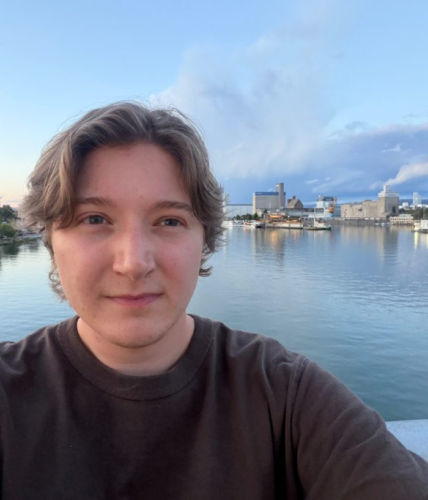
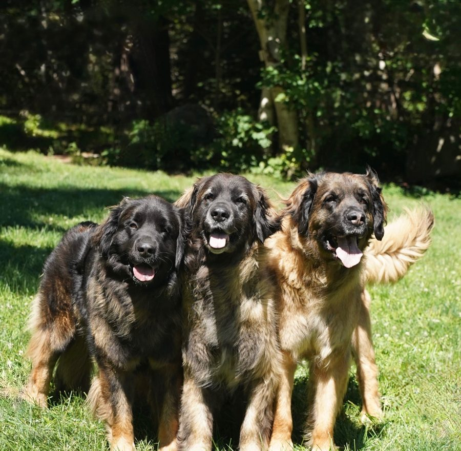
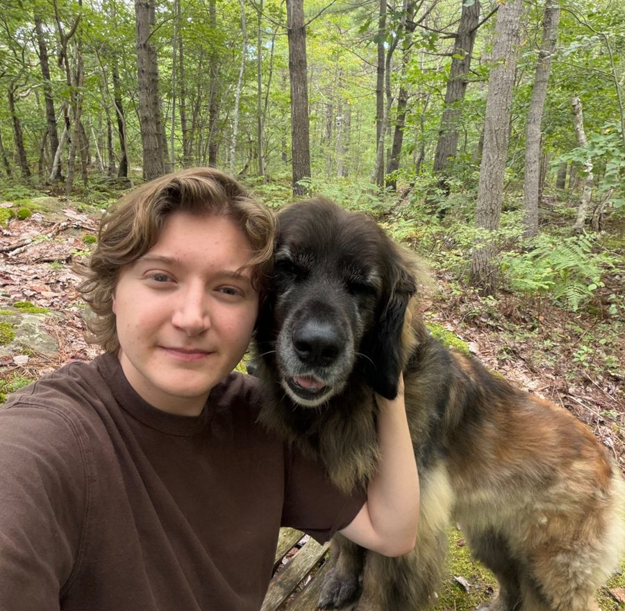

Hi, I'm Rory. I grew up in the suburbs of Halifax, and I like the city enough that I stayed here for university. Math has always been the thing I'm most interested in, so studying it felt like the natural choice.
Right now I'm doing my master's at Dalhousie, working on generators and relations for groups of rational orthogonal matrices. Before that I spent a couple of summers on quantum circuits and lattice surgery. Next, I'm hoping to do a PhD.
When I'm not doing math, I'm usually with my friends or my three dogs, Lydia, Luna and Mayzee.


Understanding a group of matrices through the simple rules its building blocks follow.
Finding ways to make quantum programs cheaper to run on future error-corrected quantum computers.
Looking for the basic rules that tell you when two reversible circuits do the same thing.
| Term | Course |
|---|---|
| Fall 2025, 2026 | MATH 1000, Calculus |
| Fall 2025, 2026 | Mathematics Learning Centre |
| Winter 2026 | MATH 1030, Linear Algebra |
| Winter 2026 | MATH 4116, Cryptography |
| Fall 2025 | MATH 3070, Number Theory |